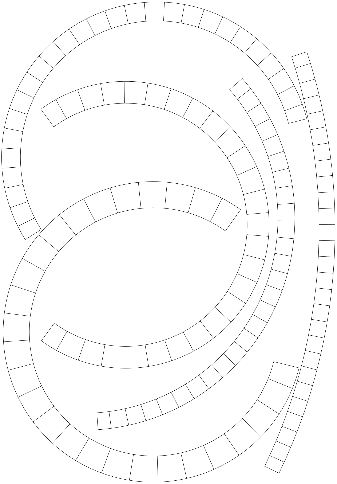
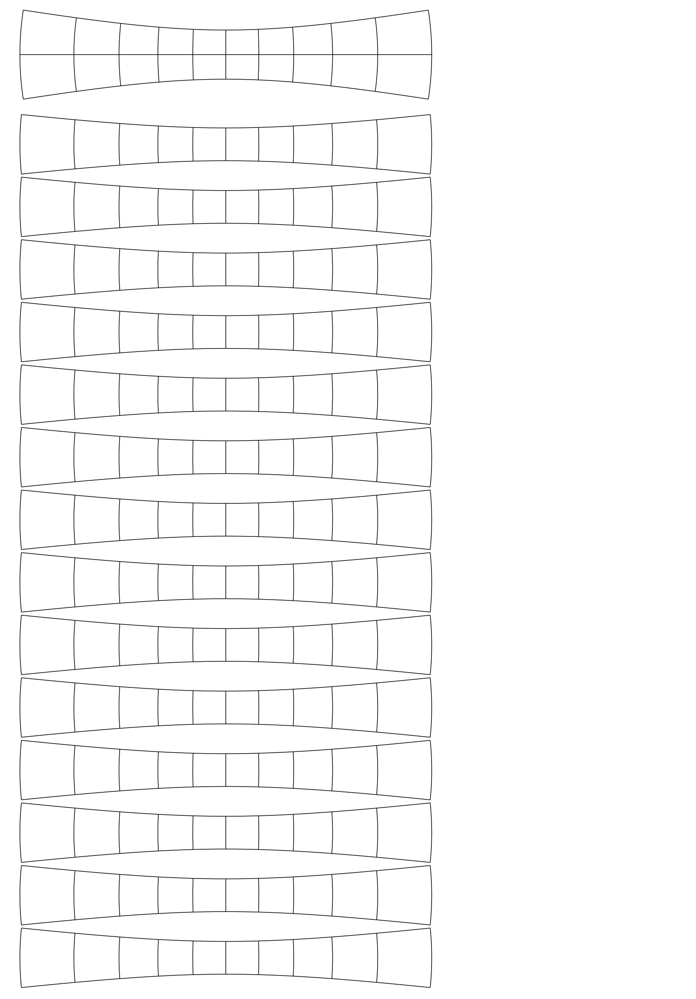
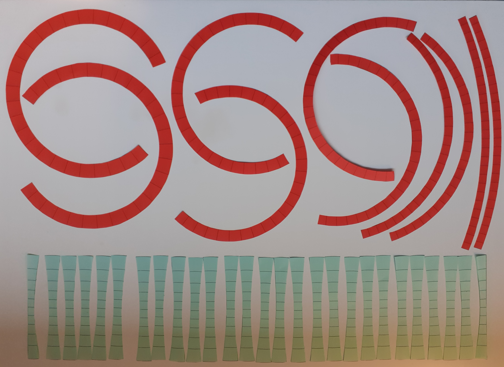
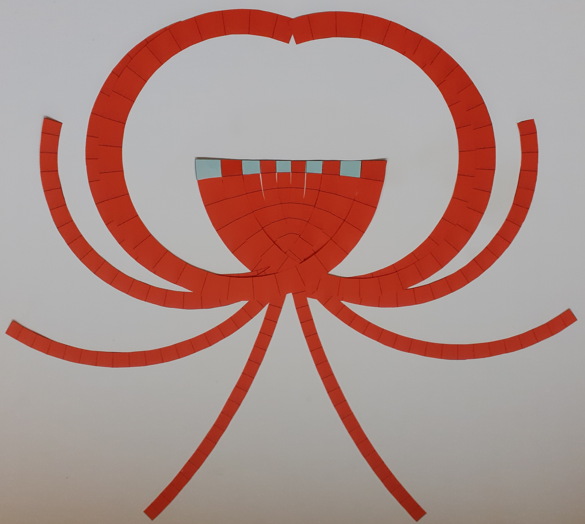
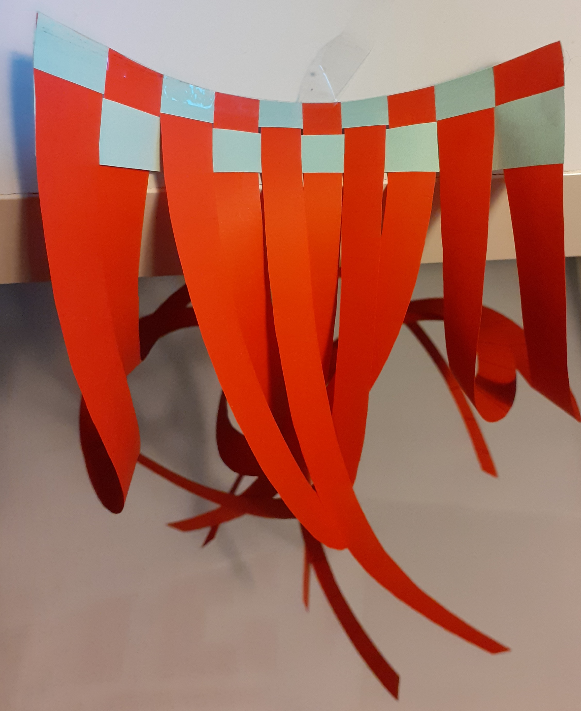
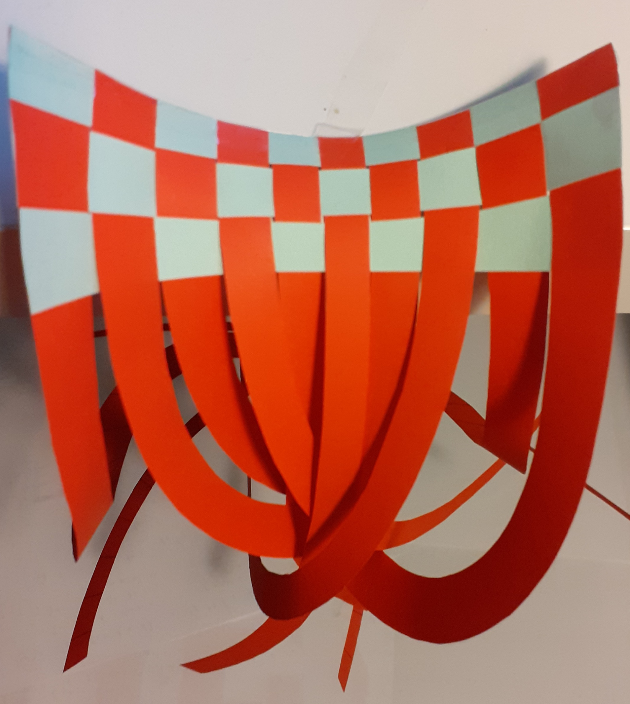
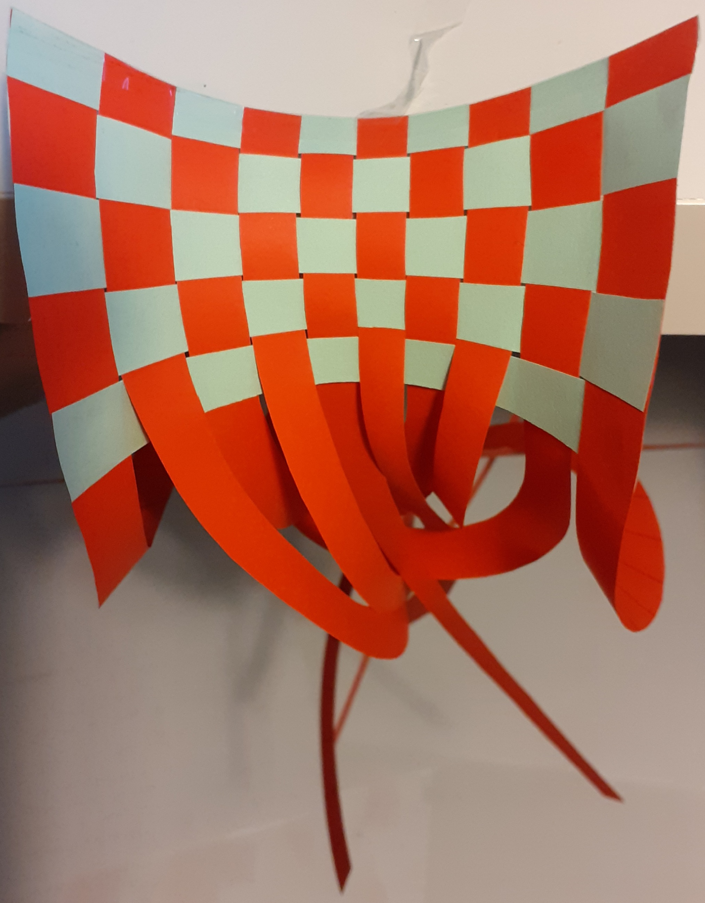
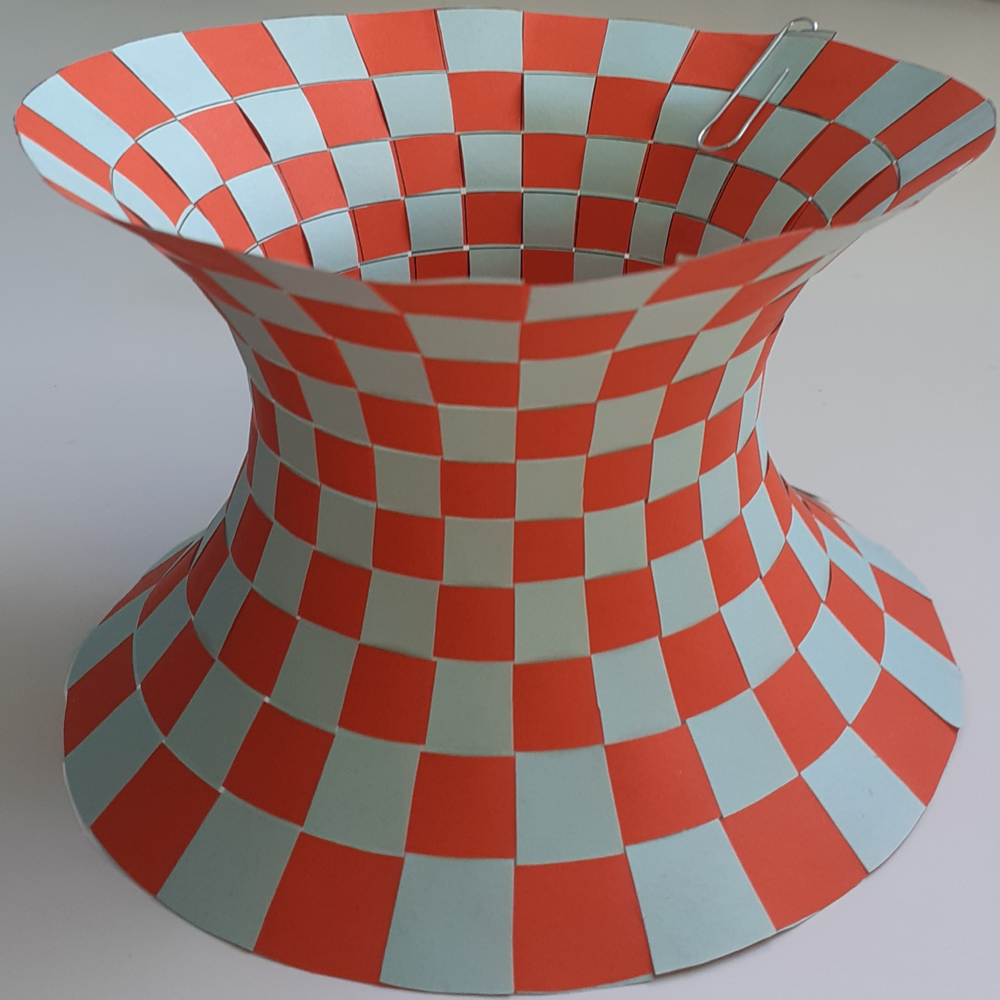

Print two copies each of the pictures below. Standard (80 gsm) A4 paper will give a reasonable balance of stability and flexibility, and yields a catenoid about 10cm tall and wide. (More refined version.) For a larger model you can use A3 paper, but may want to use thicker 160 gsm paper for more stability.




For added stability, secure with some tape over the edge of the half-rib.



